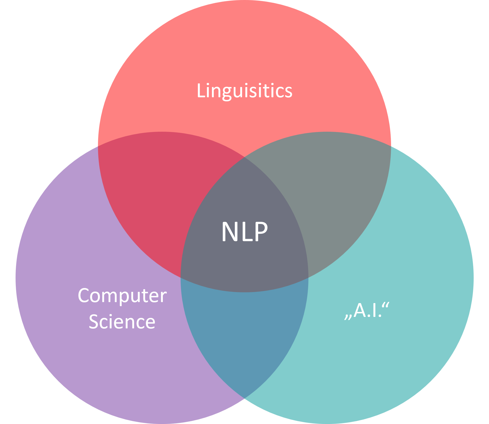

Natural Language Processing (NLP)#
Data science is a versatile field that combines methods from different domains to extract meaningful information from data. Often, the data we work with is numerical, tabular, and structured. However, a large part of the data available today is unstructured and comes in the form of text. This chapter introduces why and how we work with text data and gives a first overview of basic string handling techniques in Python.
Text data appears in many different forms and domains. It is ubiquitous in today’s digital world and can be highly valuable for generating insights and supporting decisions. In data science, we can roughly distinguish between two broad types of text-related data.
Data and Structures as Strings#
Strings are not always “language” in the everyday sense. Sometimes, text is used to encode names, categories, identifiers, or structural information. Examples include:
File and folder names: File paths and names are encoded as text and often contain useful information about the content they represent. Being able to search, split, rename, and validate such strings can make data work much more efficient.
Categorical data: Many real-world datasets contain categorical features such as Pokémon type, payment method, product category, eye color, or study group. These categories are often represented as strings.
Names and designations: Names of people, products, companies, genes, molecules, places, or institutions are common in many datasets and are usually stored as text.
Identifiers and codes: Many technical and scientific datasets contain text-based identifiers, such as sample IDs, accession numbers, file codes, or experiment labels.
In these cases, we often use string handling to clean, validate, transform, or extract information from text-like data. This does not necessarily require a deep understanding of human language, but it does require careful and precise manipulation of strings.
Human Language in Text Form#
A second and often more complex category is text that represents human language. Much of our communication happens through written text, and such data can be rich, diverse, and difficult to analyze. Examples include:
Social media, emails, and chats: A large amount of information is exchanged through posts, messages, emails, and chat conversations. Analyzing this data can help us study user behavior, opinions, sentiment, trends, and communication patterns.
News, press releases, and print media: These sources provide a continuous stream of information about the world. Text analysis can help reveal patterns, detect events, compare perspectives, or track changes over time.
The internet: Much of the internet is text, from information-dense Wikipedia articles to product descriptions, blog posts, comments, tags, and video titles. Web scraping and text mining can help extract useful information from this vast source of data.
Protocols and transcripts: Transcripts of meetings, interviews, court proceedings, lectures, or parliamentary debates provide formal or semi-formal records of events. Their analysis can reveal decisions, arguments, topics, biases, or organizational dynamics.
Legal texts, manuals, and documentation: Laws, contracts, manuals, and technical documentation contain important information, often in long and complex documents. Text analysis can support search, summarization, classification, and information extraction.
Natural Language Processing (NLP) is an interdisciplinary field at the intersection of computer science, artificial intelligence, and linguistics. It focuses on enabling computers to process, analyze, interpret, and generate human language (see Fig. 40). A central objective of NLP is to develop systems that can “read” and “understand” text well enough to perform tasks such as translation, summarization, sentiment analysis, question answering, and information extraction.

Fig. 40 Yes, again a Venn diagram. This time, it illustrates that NLP is a highly interdisciplinary field with roots in computer science, AI, and linguistics.#
The importance of NLP in data science is hard to overstate. Every day, individuals and organizations generate large volumes of text, ranging from social media updates and product reviews to customer support tickets, scientific publications, and emails. NLP provides tools and techniques to make sense of this data in an automated or semi-automated way. By transforming unstructured text into structured representations, NLP allows us to analyze human language and extract information that can support decision-making.
Because NLP covers a broad set of methods, from rule-based pattern matching to modern neural language models, this chapter introduces only a few foundational techniques commonly used in data science workflows. The goal is to equip you with basic tools to handle text, preprocess it, represent it numerically, and perform simple analyses.
Why Is Natural Language Difficult?#
Before we start working with text in Python, it is useful to ask why natural language is difficult for computers in the first place.
A natural language is a language that humans use to communicate with each other, such as English, German, Spanish, Arabic, Hindi, or Mandarin. Natural languages developed historically and socially over long periods of time. They are different from formal languages such as Python, SQL, or mathematical notation, which are designed to be precise and unambiguous.
This difference is one of the main reasons why NLP is challenging. Human language is flexible, context-dependent, and often ambiguous. The same sentence can mean different things depending on the situation, the speaker, shared background knowledge, tone, or cultural context.
One challenge is metaphorical language. We often do not mean something literally. For example:
He tried to break through the wall with his head.
Taken literally, this sentence describes a rather painful action. But as a metaphor, it means that someone is stubbornly trying to force something, even when a more careful approach would be better. A computer system that only analyzes the literal meaning may miss the intended message.
Another challenge is reference and context. Consider a short scene:
Tom came in and started complaining again. He talked and talked. I had had enough and showed him the door.
The phrase “showed him the door” does not usually mean that someone simply pointed at a door. In this context, it means that Tom was asked to leave. To understand this, we need more than the individual words. We need context, world knowledge, and an understanding of social situations.
A further challenge is irony and sarcasm. For example:
“Sure!” he shouted. “Don’t hold back — take as much as you want!”
Depending on the situation and tone, this may not be a generous invitation at all. It may mean the opposite: the speaker is annoyed because someone has already taken too much. Written text often lacks tone of voice, facial expressions, and gestures, which makes sarcasm especially difficult to detect automatically.
These examples show that language understanding is not just about looking up words in a dictionary. Meaning often emerges from context, intention, background knowledge, and interaction between people. NLP methods therefore need to deal with ambiguity, variation, and hidden meaning. Some simple tasks can be solved with string operations and regular expressions, while others require statistical models, machine learning, or large language models.
Example areas for the use of NLP techniques#
The following examples illustrate how broadly NLP can be applied and why it is so valuable:
Text Classification
Text classification automatically assigns predefined categories or tags to text. By analyzing content and learning patterns, it streamlines tasks such as spam detection, news topic labeling, and document organization.Sentiment Analysis
Sentiment analysis uses NLP to detect and quantify the emotional tone of a text. Businesses rely on this technique to gauge customer opinions in reviews, social media posts, or survey responses, helping them make informed decisions based on positive, neutral, or negative sentiment.Summarizationg
Summarization distills lengthy documents into concise versions that preserve key points. It can be extractive (selecting important sentences) or abstractive (generating new summary sentences).Spell Checking
Spell-checking tools detect and suggest corrections for misspelled words. Modern approaches go beyond simple dictionary lookups by using context-aware models (e.g., probabilistic or neural methods) to correct typos or wrong word choices (e.g., “their” vs. “there”), which improves clarity and credibility in written text.Machine Translation
Machine translation (MT) converts text from one language to another. Contemporary MT systems—often based on neural sequence-to-sequence architectures—handle idiomatic expressions and context far better than older rule-based or phrase-based methods. MT accelerates multilingual communication, making large volumes of content accessible across languages.Chatbots
Chatbots leverage NLP to understand user queries, infer intent, and generate appropriate replies in real time. They combine components such as intent classification, entity recognition, dialogue management, and response generation. Modern chatbots are, for instance, used to handle customer service, information retrieval, and even casual conversation.
Introduction to Working with Text Data#
In this chapter, we will start with the basics of string handling in Python. You are probably already familiar with basic string operations, and perhaps also with regular expressions. Consider this chapter a short recap and consolidation of important techniques for working with text.
In the following chapters, we will build on these basics and move toward more typical NLP methods, such as tokenization, text preprocessing, numerical text representations, and TF-IDF. For now, the focus is on handling text as strings: searching, slicing, replacing, splitting, combining, and recognizing patterns.
my_text = """Once upon a time, in a far-off land of data, lived a strange yet
curious character known as Stringman. Stringman wasn't an ordinary
resident of this land. He had a unique ability to transform himself
into different forms.\n
One day, String-man decided to visit the 'Tuple Twins'. As he was
journeying, he had to pass through the eerie 'List Forest'.
Suddenly, a wild 'IndexError' appeared. It was well-known that
'IndexErrors' were not fond of anyone from the 'String' family.
String man, being clever, quickly transformed into 'string-man'
and tricked the 'IndexError' saying, "You must be mistaken, I am
not a Stringman, but a mere hyphenated man."\n
Fooled by his disguise, the 'IndexError' let him pass. String-man
then continued his journey, relishing his victory over the 'IndexError'
and looking forward to meeting the 'Tuple Twins'.
"""
print(my_text)
Once upon a time, in a far-off land of data, lived a strange yet
curious character known as Stringman. Stringman wasn't an ordinary
resident of this land. He had a unique ability to transform himself
into different forms.
One day, String-man decided to visit the 'Tuple Twins'. As he was
journeying, he had to pass through the eerie 'List Forest'.
Suddenly, a wild 'IndexError' appeared. It was well-known that
'IndexErrors' were not fond of anyone from the 'String' family.
String man, being clever, quickly transformed into 'string-man'
and tricked the 'IndexError' saying, "You must be mistaken, I am
not a Stringman, but a mere hyphenated man."
Fooled by his disguise, the 'IndexError' let him pass. String-man
then continued his journey, relishing his victory over the 'IndexError'
and looking forward to meeting the 'Tuple Twins'.
Basic Python string handling methods#
The Python string data type already comes with many basic string handling methods. Here, more as a repetition, some of the most common ones:
Python String Methods#
Method |
Description |
|---|---|
count() |
Returns the number of times a specified value occurs in a string |
encode() |
Returns an encoded version of the string |
endswith() |
Returns true if the string ends with the specified value |
index() |
Searches the string for a specified value and returns the position of where it was found |
islower() |
Returns True if all characters in the string are lower case |
isupper() |
Returns True if all characters in the string are upper case |
join() |
Joins the elements of an iterable to the end of the string |
lower() |
Converts a string into lower case |
strip() |
Returns a trimmed version of the string |
lstrip() |
Returns a left trim version of the string |
replace() |
Returns a string where a specified value is replaced with a specified value |
rstrip() |
Returns a right trim version of the string |
split() |
Splits the string at the specified separator, and returns a list |
splitlines() |
Splits the string at line breaks and returns a list |
startswith() |
Returns true if the string starts with the specified value |
strip() |
Returns a trimmed version of the string |
upper() |
Converts a string into upper case |
This is not a full introduction to basic string handling with Python. For more information, you can easily find plenty of material online, for instance the w3schools on Python strings. Here, we will simply go through a few common examples as a refresher.
my_text.lower()
'once upon a time, in a far-off land of data, lived a strange yet\ncurious character known as stringman. stringman wasn\'t an ordinary\nresident of this land. he had a unique ability to transform himself\ninto different forms.\n\none day, string-man decided to visit the \'tuple twins\'. as he was\njourneying, he had to pass through the eerie \'list forest\'.\nsuddenly, a wild \'indexerror\' appeared. it was well-known that\n\'indexerrors\' were not fond of anyone from the \'string\' family. \nstring man, being clever, quickly transformed into \'string-man\'\nand tricked the \'indexerror\' saying, "you must be mistaken, i am\nnot a stringman, but a mere hyphenated man."\n\nfooled by his disguise, the \'indexerror\' let him pass. string-man\nthen continued his journey, relishing his victory over the \'indexerror\'\nand looking forward to meeting the \'tuple twins\'.\n'
One of the first things to note when working with text data in Python is the presence of special character sequences like \' and \n. You might have noticed these appearing in our story about Stringman when we printed the lowercased text using my_text.lower(). These are known as escape sequences.
The \' sequence is used to include literal single quotes (') in our text string. This is necessary because Python interprets single quotes as marking the start or end of a string. Therefore, to use a single quote as part of the string itself (for instance, in contractions like “don’t” or to denote possession as in “Python’s”), we ‘escape’ it using a backslash (\) before the quote.
On the other hand, \n is a newline character that is used to start a new line. Python interprets this sequence as a single character that moves the cursor to the next line. This is why we see the text broken into multiple lines when we print the content of my_text.
Understanding and being able to handle such escape sequences is an essential part of working with text data, as they can affect the processing and analysis of the text.
Modify strings#
A very common method used to modify strings in Python is via the replace() methods. This is well suited to replace specific characters or sequences of characters.
s = "We don't always like all characters and sequences we have."
s.replace("i", "!").replace("e", "3")
"W3 don't always l!k3 all charact3rs and s3qu3nc3s w3 hav3."
Mini Quiz!#
Make a guess: What would the following code return?
print("abc".replace("ab", "cc").replace("c", "x"))a) ccx
b) ab
c) xxx
d) abx
Count words#
Counting words is a very common task. It is even central to many data science methods. Python string methods include methods like count() which, like their name says, can do some of this counting for us. But we will quickly see, that often this is not good enough.
my_text.count("no")
4
Careful. This will not count all words “no”, but every single occurrence of the letter sequence no in our string, which would also include words like “none” or “nothing” etc.
my_text.count("stringman"), my_text.count("string-man")
(0, 1)
my_text.lower().count("stringman"), my_text.lower().count("string-man")
(3, 3)
“Tokenize” (for now: break up into words)#
Tokenize? No worries, you did not miss anything, the concept of tokens was not introduced yet. We will do so in the next chapter(s). For now it is good enough to consider tokens as words, even though we will soon enough see that this is not fully correct.
words = my_text.lower().split(" ") # still many wrong words in there
print(words[:40])
['once', 'upon', 'a', 'time,', 'in', 'a', 'far-off', 'land', 'of', 'data,', 'lived', 'a', 'strange', 'yet\ncurious', 'character', 'known', 'as', 'stringman.', 'stringman', "wasn't", 'an', 'ordinary\nresident', 'of', 'this', 'land.', 'he', 'had', 'a', 'unique', 'ability', 'to', 'transform', 'himself\ninto', 'different', 'forms.\n\none', 'day,', 'string-man', 'decided', 'to', 'visit']
words = my_text.lower().replace(".", "").replace(",", "").replace("\n", " ").split(" ")
print(words[:40])
['once', 'upon', 'a', 'time', 'in', 'a', 'far-off', 'land', 'of', 'data', 'lived', 'a', 'strange', 'yet', 'curious', 'character', 'known', 'as', 'stringman', 'stringman', "wasn't", 'an', 'ordinary', 'resident', 'of', 'this', 'land', 'he', 'had', 'a', 'unique', 'ability', 'to', 'transform', 'himself', 'into', 'different', 'forms', '', 'one']
Common problem: different variations of a word#
When we want to count occurences of a specific word, or name, we often will face the problem that written language is usually not fully consistent.
words.count("stringman"), words.count("string-man")
(3, 2)
Such inconsistency problems can be solved in many ways. Here just a few, to get an idea, and to demonstrate that basic Python string handling is often not powerful (or “expressive”) enough for common problems we often deal with.
Solution 1:
variations = ["string-man", "stringman", "string man"]
# Solution 1
translations = {"string-man": "stringman",
"string man": "stringman",
"stringman": "stringman"}
print([translations[w] for w in variations])
['stringman', 'stringman', 'stringman']
Solution 2 - real bad:
We might be tempted to again simply use replace() here, but that won’t easily cover all the cases we have.
print([w.replace("-", "") for w in variations])
['stringman', 'stringman', 'string man']
Regular Expressions (Regex)#
Using only basic string operations quickly becomes very limiting, or at least the required code will become highly complex once we need to do things far beyond two or three such operations. This is usually the point where people turn to regular expressions which are far more versatile then individual replace() or split() operations.
Regular Expressions, often shortened to “regex,” are a powerful tool for working with text data. They’re a sequence of characters forming a search pattern, primarily used for pattern matching with strings or string manipulation. In the world of Data Science, regular expressions find widespread use in text processing tasks.
What are Regular Expressions?#
At their core, regular expressions are a means to describe patterns within strings. They offer a flexible and concise way to identify strings of text such as particular words, patterns of characters, or a combination of these. This can be as simple as searching for a specific word or as complicated as extracting all email addresses from a text.
Uses of Regular Expressions#
Regular expressions are used for several text processing tasks:
Validation: They can check if the input data follows a certain format, such as an email address or a telephone number. This is often applied when you fill in online forms, or when you add your data in an online shop or registration process.
Search: You can use regex to locate specific strings or substrings within a larger piece of text.
Substitution: They can be used to replace certain patterns in a string.
Splitting: Regular expressions can define the delimiter to split a larger string into a list of smaller substrings.
Data Extraction: They are often used to scrape web data, where specific patterns need to be extracted from HTML code.
Using Regular Expressions in Python#
Python’s built-in re module allows us to use regular expressions (see documentation). The module provides several functions, including match(), search(), findall(), split(), sub(), and others, each designed to manipulate strings in different ways.
import re
search = re.search(r"string[- ]?man", my_text.lower())
search
<re.Match object; span=(92, 101), match='stringman'>
search.group()
'stringman'
Search vs. findall#
Unlike the name might suggest, re.search will only search until finding the first matching pattern.
If we want to find all instances matching the given regex pattern than we have to use re.findall:
results = re.findall("string[- ]?man", my_text.lower())
results
['stringman',
'stringman',
'string-man',
'string man',
'string-man',
'stringman',
'string-man']
In this context it is good to know that in Python we can work with “raw strings” by adding an “r” in front of the string. This essentially just means, that Python will not interpret escape characters (\).
r"\nmno"
'\\nmno'
"\nmno"
'\nmno'
print(r"\nmno")
print("\nmno")
\nmno
mno
There are many resources in the internet on how to build and use regular expressions. Here are some of the most common rules:
Text, Numbers, Classes#
.any character except “new line” (“\n”)\da digit, that is 1, 2, … 9\Dno digit, i.e., any character except 1, 2, … 9\wa word character, which includes lower + upper case letters, digits, and underscore\Wno word character\sa space or tab character\Sno space or tab character, almost all characters[aAbBcC]any of the contained characters[^aAbBcC]NONE of the contained characters
Positions in the String#
^beginning of the string$end of the string\bword boundary
Repetitions#
?zero or once, i.e., the expression is optional+at least once*any number of times (including none){n}exactly n times{min,max}at least min times and at most max times{min,}at least min times{,max}at most max times
Characters#
[A-Z]ABCDEFGHIJKLMNOPQRSTUVWXYZ[a-z]abcdefghijklmnopqrstuvwxyz[0-9](or\d) 0123456789\wWord = At least one letter, a digit, or underscore (short for[a-zA-Z0-9_]).\WNo word. Short for[^a-zA-Z0-9_]\dDigit (short for[0-9]).\DNo digit (short for[^0-9]).
Groups and Branches#
|is anor–>A|Btherefore looks for matches with A or B.[]contains a set of characters.[abc]would therefore expect an a, b, or c.(...)denotes a group. This will be given separately later, e.g., when we executere.findall()orre.search().(?:...)is a “non-capturing group”, i.e., a group that is not given separately later.(?=...),(?!...)“Positive Lookahead”, “Negative Lookahead” describe patterns that must follow. However, these are not read out with.(?<=...),(?<!...)“Positive Lookbehind”, “Negative Lookbehind” describe patterns that must precede. However, these are not read out with.
# Few more examples
re.findall(r"\.\w{2,3}", "dot.com oder dot.de")
['.com', '.de']
re.findall(r"\.\w{2,3}$", "dot.com or dot.de")
['.de']
nerd_string = "500GB for 100$ is not so great. \
I want 1000.0 Gigabytes for less than 99.90 $"
regex = r"[0-9\.]+\s*(GB|[Gg]igabytes)"
re.findall(regex, nerd_string)
['GB', 'Gigabytes']
regex = r"([0-9\.]+)\s*(GB|[Gg]igabytes)"
re.findall(regex, nerd_string)
[('500', 'GB'), ('1000.0', 'Gigabytes')]
import time
def smallest_chatbot_in_the_world():
"""
A simple chatbot that responds to user complaints about problems or issues.
"""
print("Hi. What's up?")
user_input = input(">>> ").strip()
# Mini chat-bot
regex_problem = r"(problem|issues?) with ([a-zA-Z\s]+)"
problem_mentioned = re.findall(regex_problem, user_input, re.IGNORECASE)
if problem_mentioned:
problem = problem_mentioned[0][1].strip()
problem = re.sub(r"\b(my|our)\b", "your", problem, flags=re.IGNORECASE)
print("Come on! ... *MIMIMI* ... ")
time.sleep(1)
print(f"Stop complaining about {problem}!!")
else:
print("Yeah, I know what you mean.")
time.sleep(2)
print("Let's try something better next time... gotta go.")
automated_run = True # Set to False to run it yourself!
if automated_run:
from unittest.mock import patch
# Mock user input for testing
with patch("builtins.input",
return_value="All good."):
smallest_chatbot_in_the_world()
else:
smallest_chatbot_in_the_world()
Hi. What's up?
Yeah, I know what you mean.
Let's try something better next time... gotta go.
automated_run = True # Set to False to run it yourself!
if automated_run:
from unittest.mock import patch
# Mock user input for testing
with patch("builtins.input",
return_value="I have a problem with my computer"):
smallest_chatbot_in_the_world()
else:
smallest_chatbot_in_the_world()
Hi. What's up?
Come on! ... *MIMIMI* ...
Stop complaining about your computer!!
Let's try something better next time... gotta go.
user_input = "Hi there. I have a problem with my broken bike."
#user_input = "Hello... I have a real problem!"
#user_input = "Hello... I have a real problem with all the violence!"
regex_problem = r"(problem|issue) with ([a-zA-Z\s]*\b)"
problem_mentioned = re.findall(regex_problem, user_input)
# mini chat-bot
print(">>", user_input)
if len(problem_mentioned) > 0:
problem = problem_mentioned[0][1]
problem = re.sub(r"\b(my|our)\b", "your", problem)
print(f"What exactly is wrong with {problem}?")
else:
print("Yeah, I know what you mean.")
>> Hi there. I have a problem with my broken bike.
What exactly is wrong with your broken bike?
import random
reflections = {
"am": "are",
"was": "were",
"i": "you",
"i'd": "you would",
"i've": "you have",
"i'll": "you will",
"my": "your",
"are": "am",
"you've": "I have",
"you'll": "I will",
"your": "my",
"yours": "mine",
"you": "me",
"me": "you"
}
psychobabble = [
[r'I need (.*)',
["Why do you need {0}?",
"Would it really help you to get {0}?",
"Are you sure you need {0}?"]],
[r'Why don\'?t you ([^\?]*)\??',
["Do you really think I don't {0}?",
"Perhaps eventually I will {0}.",
"Do you really want me to {0}?"]],
[r'Why can\'?t I ([^\?]*)\??',
["Do you think you should be able to {0}?",
"If you could {0}, what would you do?",
"I don't know -- why can't you {0}?",
"Have you really tried?"]],
[r'I can\'?t (.*)',
["How do you know you can't {0}?",
"Perhaps you could {0} if you tried.",
"What would it take for you to {0}?"]],
[r'I am (.*)',
["Did you come to me because you are {0}?",
"How long have you been {0}?",
"How do you feel about being {0}?"]],
[r'(.*)\?',
["Why do you ask that?",
"Please consider whether you can answer your own question.",
"Perhaps the answer lies within yourself?",
"Why don't you tell me?"]],
]
def reflect(fragment): #These have to be here...
tokens = fragment.lower().split()
for i, token in enumerate(tokens):
if token in reflections:
tokens[i] = reflections[token]
return ' '.join(tokens)
def eliza_answer(user_input):
for pattern, responses in psychobabble:
match = re.search(pattern, str(user_input))
if match: #ELIZA Responses
rspns = random.choice(responses)
return rspns.format(*[reflect(g) for g in match.groups()])
else: #ChatterBot Responses
response = "..."
return response
user_input = "I am so ashamed of who I was"
print(">>", user_input)
print(eliza_answer(user_input))
user_input = "Its just that I can't forget about it"
print(">>", user_input)
print(eliza_answer(user_input))
user_input = "How should I go on from here?"
print(">>", user_input)
print(eliza_answer(user_input))
>> I am so ashamed of who I was
How do you feel about being so ashamed of who you were?
>> Its just that I can't forget about it
Perhaps you could forget about it if you tried.
>> How should I go on from here?
Why don't you tell me?
Some eliza-like example code https://github.com/graylu21/ELIZA-ChatterBot/blob/master/ELIZAChatterBot.py
Pros and Cons of Regular Expressions#
Regular expressions come with some strong advantages, but also with some very strong limitations (or often rather: annoyances).
Pros:
Versatile: Regular expressions can handle a multitude of string matching problems with concise expressions.
Portable: The principles of regular expressions can be applied across many programming languages, command-line tools (like
grep,sed,awk), databases, etc.Powerful: Regular expressions can match complex patterns and perform sophisticated string manipulations.
Cons: Regular expressions are key elements in many data processing and data analysis workflows. But most data scientists and developers do not really get enthusiastic when it comes to this topic, and this is for a number of very good reasons. Not yet sure what is meant here? Well, just have a look at the following regex [1].
([!#-'*+/-9=?A-Z^-~-]+(\.[!#-'*+/-9=?A-Z^-~-]+)*|"([]!#-[^-~ \t]|(\\[\t -~]))+")@([0-9A-Za-z]([0-9A-Za-z-]{0,61}[0-9A-Za-z])?(\.[0-9A-Za-z]([0-9A-Za-z-]{0,61}[0-9A-Za-z])?)*|\[((25[0-5]|2[0-4][0-9]|1[0-9]{2}|[1-9]?[0-9])(\.(25[0-5]|2[0-4][0-9]|1[0-9]{2}|[1-9]?[0-9])){3}|IPv6:((((0|[1-9A-Fa-f][0-9A-Fa-f]{0,3}):){6}|::((0|[1-9A-Fa-f][0-9A-Fa-f]{0,3}):){5}|[0-9A-Fa-f]{0,4}::((0|[1-9A-Fa-f][0-9A-Fa-f]{0,3}):){4}|(((0|[1-9A-Fa-f][0-9A-Fa-f]{0,3}):)?(0|[1-9A-Fa-f][0-9A-Fa-f]{0,3}))?::((0|[1-9A-Fa-f][0-9A-Fa-f]{0,3}):){3}|(((0|[1-9A-Fa-f][0-9A-Fa-f]{0,3}):){0,2}(0|[1-9A-Fa-f][0-9A-Fa-f]{0,3}))?::((0|[1-9A-Fa-f][0-9A-Fa-f]{0,3}):){2}|(((0|[1-9A-Fa-f][0-9A-Fa-f]{0,3}):){0,3}(0|[1-9A-Fa-f][0-9A-Fa-f]{0,3}))?::(0|[1-9A-Fa-f][0-9A-Fa-f]{0,3}):|(((0|[1-9A-Fa-f][0-9A-Fa-f]{0,3}):){0,4}(0|[1-9A-Fa-f][0-9A-Fa-f]{0,3}))?::)((0|[1-9A-Fa-f][0-9A-Fa-f]{0,3}):(0|[1-9A-Fa-f][0-9A-Fa-f]{0,3})|(25[0-5]|2[0-4][0-9]|1[0-9]{2}|[1-9]?[0-9])(\.(25[0-5]|2[0-4][0-9]|1[0-9]{2}|[1-9]?[0-9])){3})|(((0|[1-9A-Fa-f][0-9A-Fa-f]{0,3}):){0,5}(0|[1-9A-Fa-f][0-9A-Fa-f]{0,3}))?::(0|[1-9A-Fa-f][0-9A-Fa-f]{0,3})|(((0|[1-9A-Fa-f][0-9A-Fa-f]{0,3}):){0,6}(0|[1-9A-Fa-f][0-9A-Fa-f]{0,3}))?::)|(?!IPv6:)[0-9A-Za-z-]*[0-9A-Za-z]:[!-Z^-~]+)])
If you love solving puzzles, go ahead and find out what it does. Important to note here is mostly, that such regular expressions are indeed being used! I guess, however, that we can easily agree that this is not very accessible and readable. So, main disadvantages of regular expressions are:
Complexity: Regular expressions can become complex and hard to understand and maintain, especially for intricate patterns.
Readability: A complicated regular expression can be quite cryptic, and lack of standardization in regex flavors can cause compatibility issues.
Efficiency: Depending on the complexity, regular expressions might not be the most efficient way to perform string operations, especially for very large text data.
Developing Regex solutions#
Luckily, there are nice tools to help develop regular expressions more interactively. It remains a game of often tricky puzzles, but it often helps a lot to use those tools. For instance:
https://regex101.com/
https://regexr.com/
Try, for instance, to distinguish correct email from not-correct email:
dummy.dummy@something.com
this goes to all people@all
This-is-my-mail@my-mail.home.com
Let bots do the work#
To be honest, building regular expressions used to be a time-consuming and often unstructured trial-and-error process, at least for many people I know.
Large language models are often a good shortcut. As usual, they won’t always come up with the most optimal solution, and sometimes their solutions are even wrong. But so are mine when it comes to regex. So, independent of how it was first generated, when things are getting a bit more complicated, it becomes very important to thoroughly test the respective regular expressions on sufficiently diverse test data. In particular, if the goal is mostly on data extraction and basic data processing, language models are often a very decent way to go. The situation can be different when aiming at production-ready, highly-reliable code, for instance for critical software pieces.
The following was just a quick result from ChatGPT 4o on the prompt
“Please provide a regex for Python for finding all instances in my_text which are regular english verbs in past tense. Exclude cases such as red”.
import re
pattern = r'\b\w{3,}ed\b'
matches = re.findall(pattern, my_text, re.IGNORECASE)
# Output the matches
print(matches)
['lived', 'decided', 'appeared', 'transformed', 'tricked', 'hyphenated', 'Fooled', 'continued']